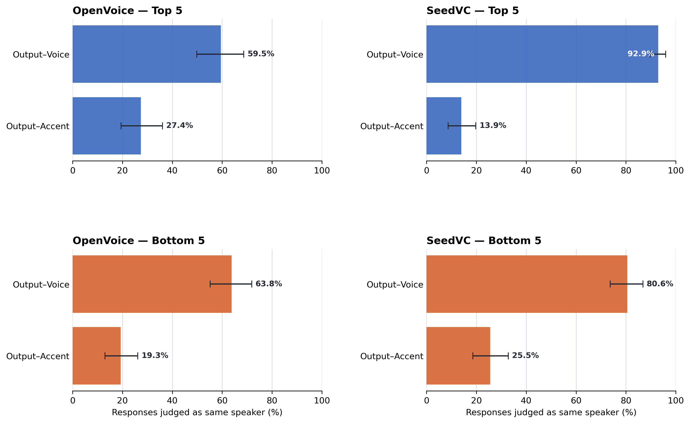

Evaluating accent conversion in voice conversion models (ICPhS 2027, submitted)
Code and stimuli available here: GitHub
This study tested the capability of state-of-the-art voice conversion models to perform accent conversion. These models take in two references: a voice (i.e., timbre) reference and an accent (i.e., style) reference, and output a synthetic voice that sounds like the voice reference speaking in the accent of the accent reference. However, methods of testing this type of conversion are coarse and non-standardized. In this study, we tested the efficacy of these models using a careful perception study. We used OpenVoice and Seed-VC. What we found was that Seed-VC performs better at preserving the voice of the input but does not definitively transfer accent. OpenVoice, on the other hand, successfully transfers accent but does not preserve the voice of the input.
Examples: Listen for yourself
Both models are trained to produce an output that preserves the voice of the voice reference while transferring the accent of the accent reference.
OpenVoice
Voice reference
Accent reference
Output
Seed-VC
Voice reference
Accent reference
Output

